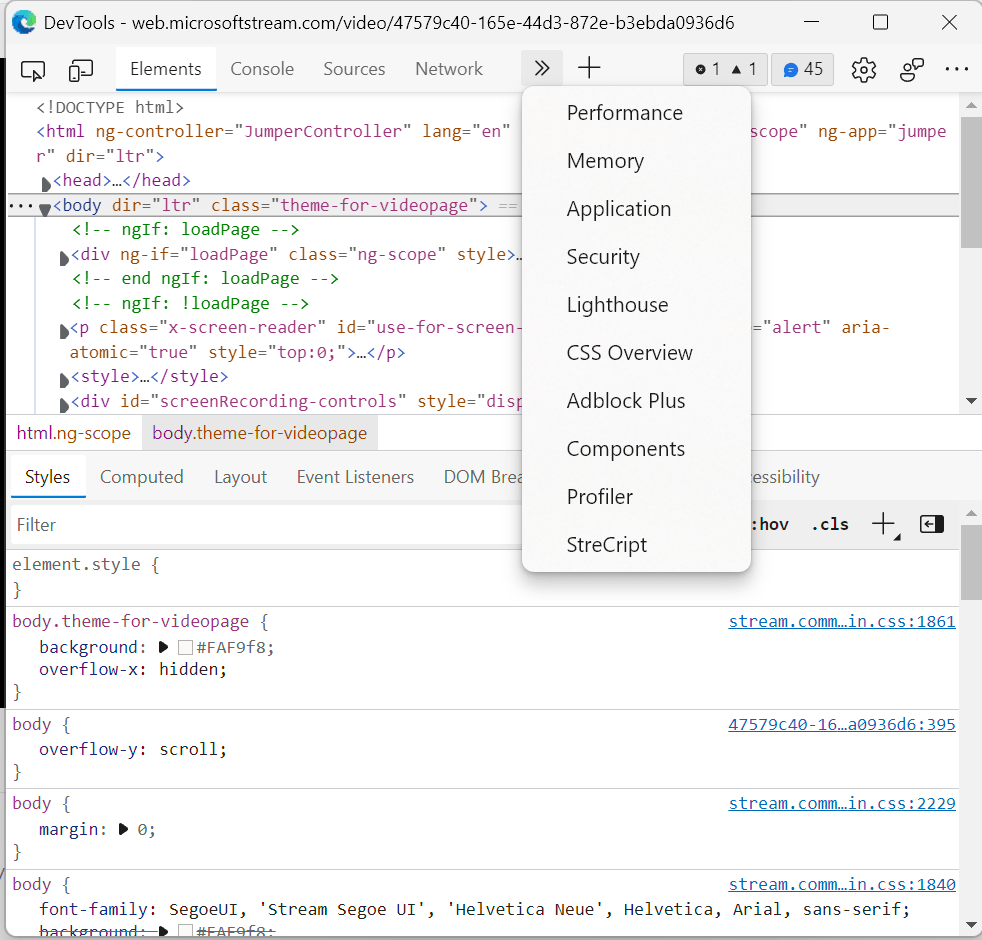
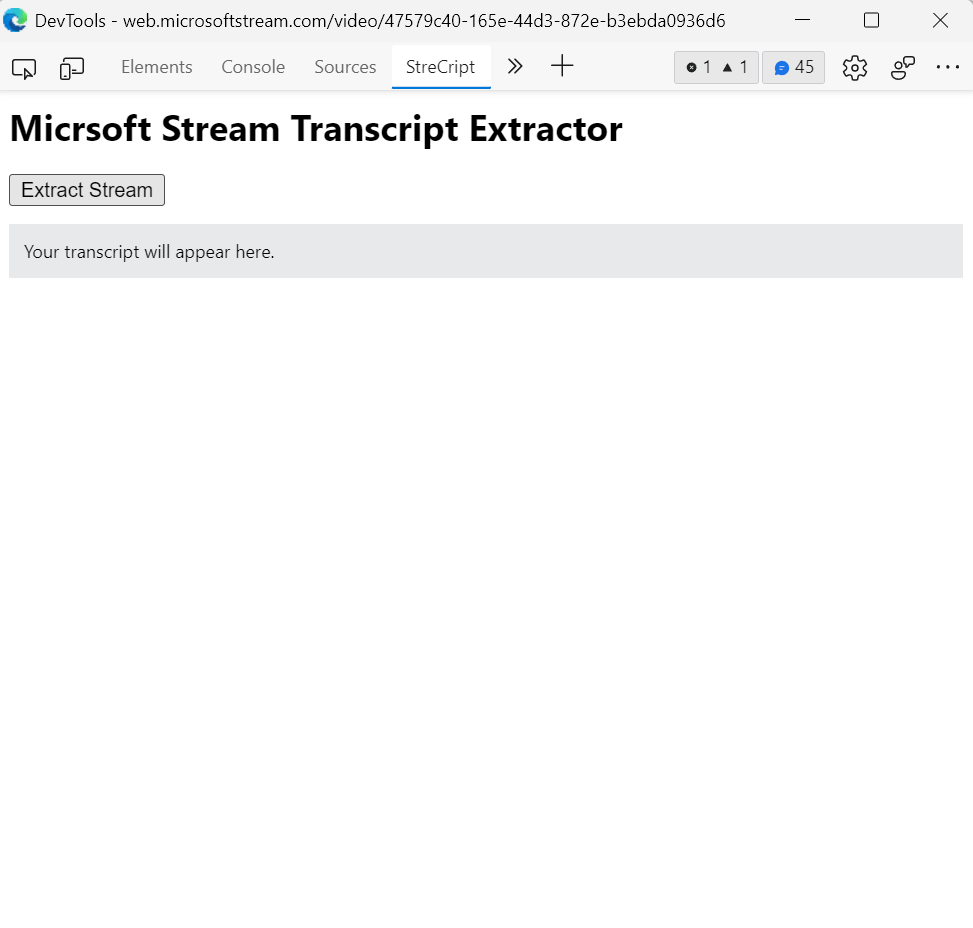
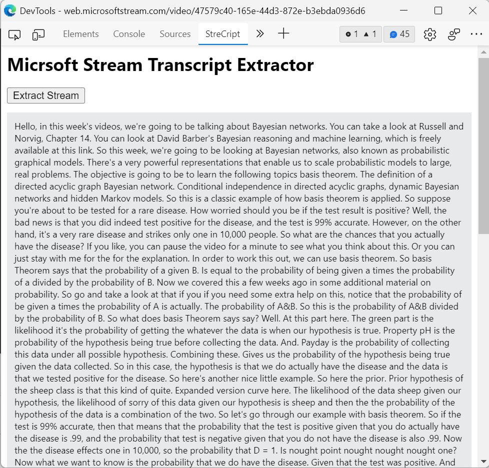

Stream/MediaSite Transcript Extractor
Introduction
Over the last 2 years, our studies have migrated from in-person classes to online classes. No one is to
blame here for COVID other than our only egg-laying mammal. In any case, we use Microsoft Webstream for
all of the lectures, and all of these lectures have transcripts associated with them.
Now, if I say that, what if there is somewhat of an easier way to extract those transcripts? That would
make our lives a hell of a lot easier. If you have observed that these transcripts sometimes contain
very important information that is not present in the slides, That's why I created this extension, which
extracts all the transcripts and presents them to you in a way that you can easily copy and paste them
wherever you want them.
I have also added support for MediaSite.
Directions
- Launch the developer tools by pressing F12 or CTRL+SHIFT+I.
- Next, click on the double arrow to see "StreCript" and click on it. 
- After this, you should see a welcome screen and an extract button.
- Before clicking on the extract button and without closing the developer tools, reload the page. Note: this step is not required for MediaSite videos. Instead, just play the video before clicking on extract button.
- Now click on the extract button and if the extension is able to find the transcript, it will be shown in the box below.
If you are sure that the transcript is present for that video, please reload the page with StreCript open and then click Extract.